De: La Frikipedia, la enciclopedia extremadamente seria.
De: La Frikipedia, la enciclopedia extremadamente seria. De: La Frikipedia, la enciclopedia extremadamente seria.
| De la serie monstruos mitológicos: | |||
| Jefe final | |||
| |||
| Nombre Científico | FinalMigus | ||
| Hábitat | Castillos,montes putrefactos,las llamadas pantallas finales | ||
| Organización | OMDJFSA | ||
| Actividad | Se están moviendo durante todo el juego pero sólo luchan al final | ||
| Dieta | Héroes de videojuego | ||
| Inteligencia | Artificial | ||
| Aparición | Al final de cada videojuego digno | ||
| Número aproximado | Uno por cada videojuego | ||
| Armadura | Algunos tienen un campo de fuerza invisible | ||
| Ataques | Conforme le vas quitando vida aprenden nuevos ataques | ||
| Moral | Ninguna | ||
| Notas | A mayor altura más tiempo te llevará derrotarlo | ||
Bestia de gran tamaño (corporal o de armamento), que aparece en la batalla final (obvio) de un videojuego y cuya muerte es una meta casi inalcanzable, a excepción del caso de Bowser que es inmortal porque nunca lo matas (gracias a la poca imaginacion de Noentiendo), y vencerlo no lleva mas de 10 o 15 segundos.
Al principio los videojuegos no tenían jefes finales y por tanto no tenían final, el héroe siempre salía victorioso ya que los enemigos de la época eran simples paquetes que sólo sabían moverse de un lado hacia otro o, en el mejor de los casos lanzar cosas, pero con el tiempo fueron tomando importancia, cada vez eran más inteligentes y decidieron que el escenario del Pacman se les estaba quedando pequeño, por lo que los fantasmas de colores (antiguamente había 10 de cada color incluyendo colores infrarojos y ultravioletas) empezaron a crear juegos cuyo objetivo no era divertirse, sino cabrear, desesperar y hacer perder el tiempo al héroe (jugador) (en el peor de los casos suicidio), cada juego lo lideraba un fantasma del PacMan que había evolucionado progresivamente para vencer al héroe del juego o un personaje de otro videojuego que quiere más protagonismo,así nacieron los Jefes Finales, (así lo dijo un chino), pero esto ocurrió hace millones de años, hoy en día los jefes finales no conservan ningún rasgo de sus antepasados los fantasmas del PacMan.
Generalmente se sabe desde el principio quien es, el bicho verde que secuestró a la princesa/amiga/hermana/amada (casi siempre es una moza de buen ver, como la tía buena de las películas). Y además suele ser el mismo en todos los juegos de la saga. Bowser (Super Mario Bros), Ganon (The Legend of Zelda), Gruntilda (Banjo-Kazooie), examen de Matemáticas (cualquier curso de E.S.O. o si estas loco en Bachillerato) son algunos de ellos.
La manera de derrotarlos varía desde lanzarlo hasta lanzarle cosas (a veces es sólo esquivarle y pegarle). Pero bueno, el caso es que sea lo que sea, hay que repetirlo varias veces. Tres en dificultad fácil, cinco en normal, y nueve en difícil. Así de sencillo. Un buen gamer le resta unas 2 veces por dificultad.
Los jefes finales de éste tipo de juegos cumplen también una serie de características básicas. La primera de ellas es que nunca es el que parece, es decir, el pibe más malo y horrible al que hay que matar no es sino un secuaz del que parecía más débil, y que casualmente, o era el amigo de la infancia del héroe, su antiguo mentor, el padre de su novia, o algo así.
Casi siempre, el jugador avispado se dará cuen de que es el jefe final una vez aparezca.
Otra característica que los diferencia es que, a pesar de que en el fondo son buenos, el resto de enemigos del juego (o la mayoría) no mueren en el combate, pero el jefe final sí, y al final el protagonista profiere un desgarrador grito de dolor por haber asesinado a su amigo del alma... Al menos no suelen ser recurrentes.
Difícil encuadrar a los enemigos finales de éste tipo de juegos. El caso es que normalmente hacen más daño y resisten más que el resto de enemigos. Pero todo es psicológico, realmente pelean igual de mal, y un jugador experimentado les sabe dar bien por el vengue.
Es difícil encontrar un jefe final específico en un juego de acción. No siendo Ace combat).
Pues... ¿qué hay que decir?, 3 ejércitos enemigos que superan ampliamente al tuyo. Ya está
| Foto de archivo | Nombre | Descripción | Ataques | Videojuego |
|---|---|---|---|---|
| 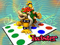 | Bowser | Es un dragón o una tortuga gigante que es tan tonto que siempre se pone en la platafarma que se quita cuando alguien le da al botón | Escupir fuego,saltar y ponerse en la plataforma que se quita cuando alguien le da al boton que hay atrás | Principalmente es el jefe final de twister, el videojuego, pero tambien aparece en la saga Super Mario Bros, Smash Bros etc.,es inexplicable que tenga tanto trabajo en plena crisis siendo tan tonto que siempre se pone en la plataforma que se quita cuando alguien le da al botón que hay atrás. |
| 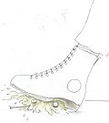 | Pié | Es un pié | Pisotón y patada | La saga Worms |
| 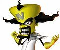 | Neo Cortex | Es un hombre amarillo con la cabeza semirectangular,de color amarillo y con el peinado de Krusty el payaso,puede que sea un teleñeco | Triángulo,Cuadrado y equis pulsado | La saga Crash Bandicoot |
| 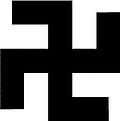 | Esvástica | Es una cruz doblada por los extrmos casi imposible de encajar | Caer y girar. Matar judíos. | La saga Tetris |
| 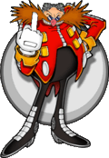 | Eggman, Robotnik, Hombre huevo | Es un hombre con forma de huevo, con nariz de pimiento y bigote de paja | Tiene una máquina con un péndulo raro que Sonic peta en 8 golpes, ademas de un sinfín de máquinas similares. | Sonic 1, Sonic 2, Sonic 3, Sonic & Knuckles, Sonic CD, Sonic Spinball, Sonic 3D Blast, Knuckles Chaotix y little big planet, etc |
| 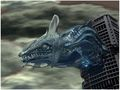 | Perfect Chaos | Es la forma Perfecta de Hydrokinesis, pero tras absorber la energía de las 7 Chaos Emeralds se transformó en un gigantesco Códice de Dresde se muestra como un Dragón de Agua que causará el Apocalipsis en 2012. | Lanza un rayo laser de alta energía igual al de Godzilla, además de lanzar balas de energía, crear tornados, y licuarse en forma de agua para escapar de Super Sonic. | Sonic Adventure originalmente, pero luego reaparece en Sonic Generations |
| 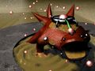 | The Finalhazard | Es la forma Perfecta del Biolizard, el extraterrestre reptiliano creado por el Profesor |
Lanza un rayo laser de alta energía gracias al poder que obtiene del Anal Intruder 2000 que tiene metido por atrás, y también ataca al reproducirse por partenogénesis y repartir Friki-Hostias con los tropocientos huevos que les arroja a Super Sonic y Super Shadow. | Sonic Adventure 2 originalmente, pero luego reaparece en Sonic Generations (solo en versión 3DS) |
| 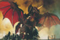 | Destoroyah | Otro de los mostros que pisotearon Tokyo para acabar con Godzilla. Particular caso de absurdismo donde tropocientos cangrejos se fusionan pero como resultado en vez de convertirse en un cangrejo ruso gigante, en cambio se transforma en una especie de dragón típico de los monstruos orientales, lo que demuestra que los guionistas de Toho son super-hyper-mega-originales. | Escupe rayos laser (como todos los monstruos de Godzilla y similares ¬¬), pero principalmente tiene mas fases de transformación y metamorfosis que Freezer y Cell combinados: arranca siendo un bicho de 3mm, evoluciona hasta ser un cangrejo ermitaño, y sigue con la digievolución pasando a ser un murciélago hasta llegar a ser el lagartón gigante que todos conocemos | Godzilla Generations: Maximum Impact, para Godzilla Generations a secas ¬¬). |
| 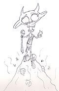 | Randolquielf | Es un prototipo de jefe final, que un friki |
Llamarada, carga, pisotón que genera expansión y barrido mágico. | La saga prototipo de videojuego (WTF??)... |
| Cervantes | Es un pirata español que escribió El Quijote | Clavar espada, blandir espada, mover espada hacia todos los lados | Soul Calibur | |
| 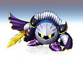 | Meta Knight | Es una bola de metal que tiene una espada y una capa | Degoyar y empalar | Kirby adventure |
| 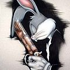 | Bugs Bunny | Es un conejo humanoide que habla | Morder (dientacoooos), puñetazo, patada voladora y disparo | kingdom Hearts |
| 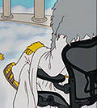 | Dios | Es un gigante con barba cuya cara está siempre fuera del campo de visión |
Truneo,terremoto,tsunami,matar | Los Simpsons, el videojuego ; Dante's Inferno, entre otros |
| 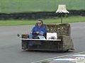 | Sofamovil | Es un coche con apariencia de sofá | Tirar chinchetas | Mario Kart y Need For |
| 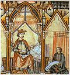 | Cantiga "Loor de Santa María pelas grandes maravilhas qu' ela fiz veer a un mendigo a piques de morrer e que déron-lhe calor e rematáron-lhe salvando a vida" de Alfonso X el sabio. | Cantiga compuesta en el siglo XII, para Laúd, organistrum y demás instrumentos perdidos. | Notas moradas, blancas, negras y marrones. | Guitar Hero. |
| 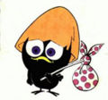 | Calimero | Brujo malvado que manipuló al capitán Fúster para que se rebelase contra el imperio, aconsejó a los héroes haciéndose pasar por el mago de la corte para derrotar a Fúster. Al final se descubre que realmente quería poner sus manos sobre la espada de dfgjkdeg, y usar su enorme poder para conquistar el mundo | Súper mega rayo de las 27 constelaciones, hacha del rey del universo, corte misterioso, manto de oscuridad eterna y lanzar cascarón. | Final Fantasy DCCXIV |
Autor(es):